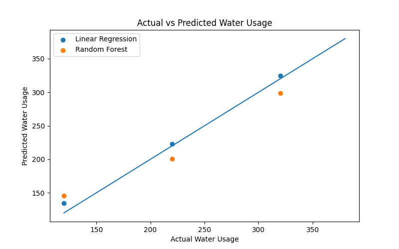

Trend
Monthly Usage Trend
Average usage climbs sharply into summer, with July as the peak.

A data-driven view of consumption trends, peak demand, neighborhood differences, anomaly detection, and usage prediction for municipal planning.
The analysis highlights monthly demand, high-consumption areas, seasonal variation, anomalies, and per-person usage intensity.
Average usage climbs sharply into summer, with July as the peak.
Tech Hub stays above the city-wide average and needs targeted audits.

Summer has both higher median consumption and wider spread.

Outlier readings are likely leak, meter, or unusual usage candidates.

Three regressors are trained on the cleaned dataset and compared by MAE, RMSE, and R2. The best model is saved for prediction.
The dashed diagonal line is perfect accuracy. Points closer to the line indicate better predictions. Points above or below it show where a model overestimates or underestimates usage.

Lower MAE and RMSE are better. Higher R2 is better.
| Model | MAE | RMSE | R2 |
|---|---|---|---|
| Linear Regression | 41.41 | 78.59 | 0.377 |
| Gradient Boosting | 60.85 | 92.80 | 0.131 |
| Random Forest | 57.82 | 95.92 | 0.072 |
The form sends household size, month, and neighborhood to the Flask API and returns the best model result plus per-model estimates.
The recommendations focus on leak detection, demand planning, and targeted conservation messaging.
Prioritize anomaly households and high-usage Tech Hub records.
Launch conservation outreach before June demand accelerates.
Use higher rates for heavy usage bands during peak months.
Track the top usage segment more frequently for early warnings.